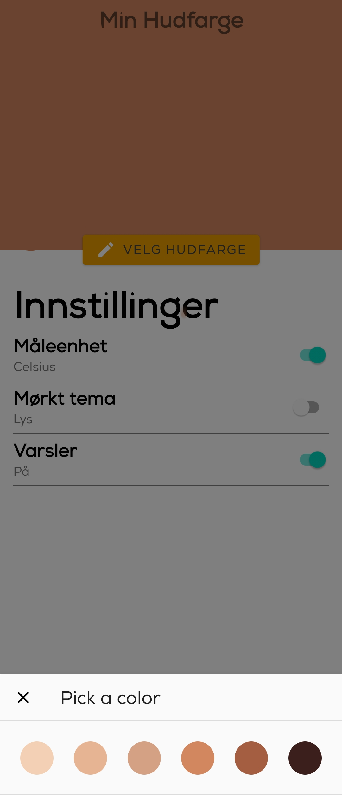

I collaborated with a team of five to design and develop the app "Solbrent", aimed at assisting users in making
informed decisions about sun exposure. We received the award for Best Visual Designed App, spring 2022.
By designing an app for students between the age of 18-25 that provides essential information, including weather
and UV-index for a specific location, the amount of D-vitamin they can acquire from sunlight,
and the estimated time
it takes to get a sunburn, based on their skin type - according to the Fitzpatrick-scale.
Process
Duration of the project was four months, divided into four sprints, rounding each sprint up with a retrospective meeting. We worked agile in teams, combining some of the flexible aspects of Kanban together with aspects of Scrum to best fit the strict deadlines and goals.
My contributions
In this project, my primary responsibilities involved the design process, including the development of the application's visual design, data collection and analysis, and also both integration, and user testing. Additionally, I was in charge of planning and writing the project report.
Solbrent?
Issue
During the Covid-19 pandemic, vitamin D and it’s importance was a hotly debated topic. Two ways to ensure adequate vitamin D levels are through dietary supplements or sun exposure,
but - how can one find the balance between getting enough vitamin D,
catching a good tan, while not getting a sunburn?
Technical aspect
The programming languages used were Kotlin and XML, and we used Android Studio for development. Data was collected from the MET-API (Norwegian Meteorological Institute). We used a MVVM architecture which shared the responsibility for retrieving, formatting and displaying data in the app.
Privacy
To fulfill the requirements of the app, we require two pieces of privacy-sensitive information from the user: location and skin type.
Universal design
By prioritizing usability and an inclusive design in the design process we allocated good time to do as many user tests for each sprint, and lastly validating the design complied with the WCAG principles.
- 
Takeaways
It is important to note that the importance of conducting expert interviews was realized later in our project. As a result, we had to rely predominantly on research articles for our information and data on UV, the Fitzpatrick scale, and skin cancer. This was a necessary adjustment due to the timing of project, and is considered a important learning experience for the next time.